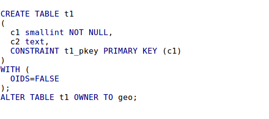
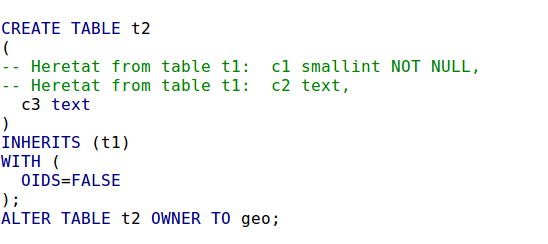
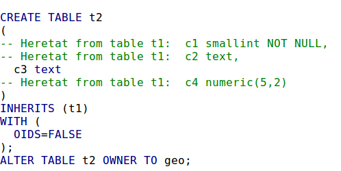
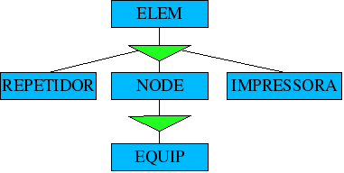
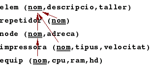
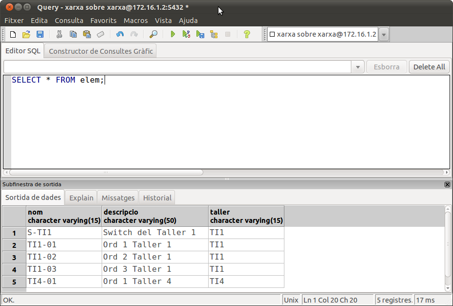
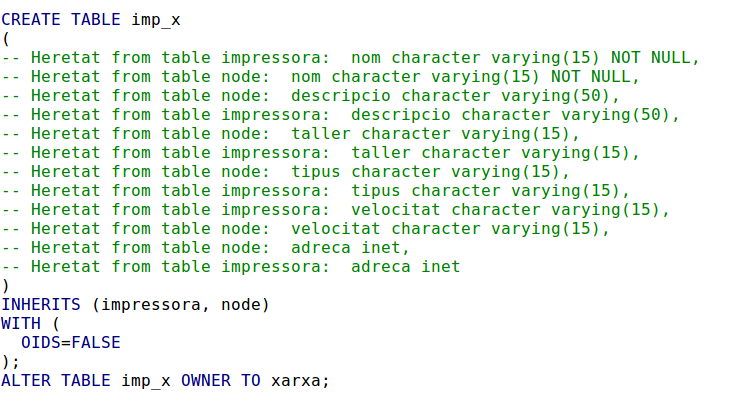
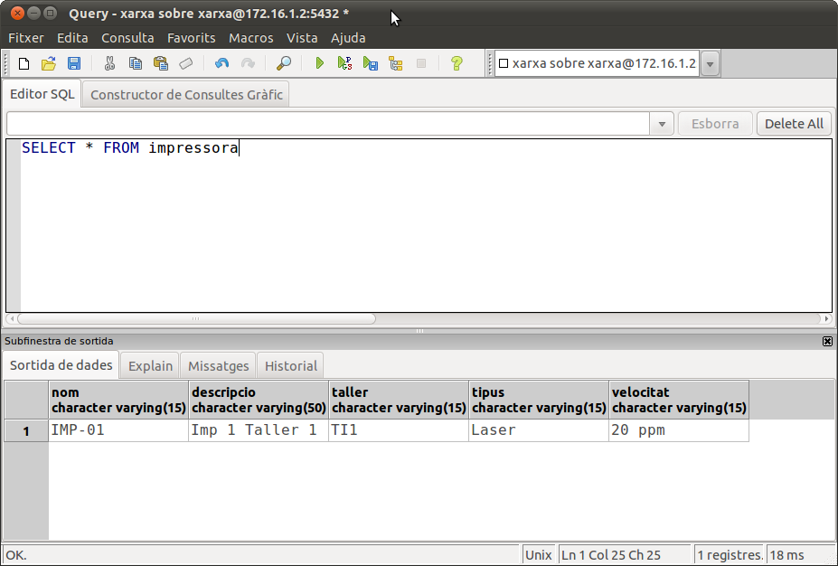
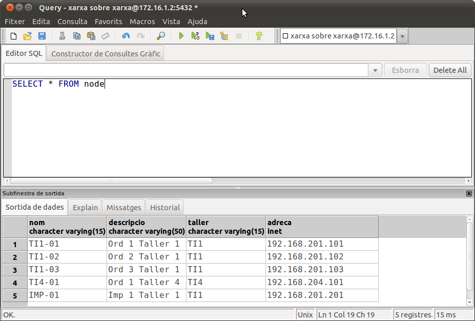
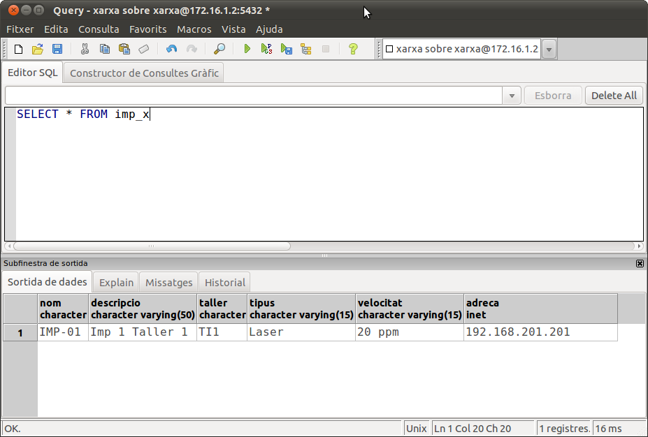

2.4.2 - Herència
És com en l'herència d'objectes. Permet heretar les propietats d'un tipus o taula en un altre tipus a una altra taula. El cas del tipus ja el coneixem de Java. El cas de la taula pot ser menys familiar.
Quan una taula hereta d'una altra, contindrà tots els camps d'aquesta, a més de poder posar nous camps.
Fins i tot podrem fer que les files que introduïm en les taules que han heretat, puguen aparèixer en la taula "principal".
Si tenim una taula creada:
c1 int2 primary key,
c2 text);
Podem crear una altra que herete les característiques d'aquesta.
c3 text) INHERITS (t1);
La taula t2 tindrà, a banda de l'atribut definit, en tindrà 2 més, c1 i c2, heretats de t1.
Açò ho podem comprovar fàcilment si obrim ara el PgAdmin i mirem les definicions de les taules acabades de crear. Fins i tot podem comprovar que l'atribut c1 és no nul en t2.
|  |  |
També ho podem comprovar si intentem inserir en t2:
insert into t2
values (1,'Hola','Adéu');
Lamentablement no conserva la clau primària, i si la volem també en t2 haurem de modificar la taula per definir-la. Ho podem comprovar amb aquesta sentència:
insert into t2
values (1,'Hola2','Adéu2');
No dóna cap problema, perquè no hi ha clau primària. Observeu com fins i tot PgAdmin si anem a veure les dades (Vista de Dades) avisa que no hi ha clau principal i per tant no podrà editar-la, ja que no tindrà manera d'identificar la fila (distint seria si l'haguérem definida amb OIDs , object identifier, que posa una columna amb un número que identifica la fila).
Ara fixem-nos en una altra cosa. Si ara volem veure el contingut de t1 (on de moment no havíem introduït res), veurem que ja té dues files: (1,'Hola') i (1,'Hola2'). Bé realment aquestes dues files no estan introduïdes en t1, sinó que quan PostgreSQL trau el contingut d'una taula, trau també, per defecte, les seues descendents. La prova que realment no estan introduïdes en t1 és que no ha donat problemes la clau primària (que en t1 sí que està definida). I fins i tot una prova més concloent: anem a inserir en t1.
insert into t1
values (1,'Hola3');
No dóna cap problema, però si que el donaria si intentàrem:
insert into t1
values (1,'Hola4');
Si per alguna raó volem traure únicament aqulles files que realment pertanyen a t1 posaríem l'atribut ONLY davant del nom de la taula
select * from only t1;
Una característica molt interessant és que els possibles canvis en l'estructura de la taula inicial es veuran reflectits en les taules descendents.
Així, sí afegim una columna o la suprimim, o la canviem de tipus, o fins i tot si la posem no nula, el mateix passarà amb les taules descendents.
alter table t1 add column c4 numeric(5,2);

Nota
En PgAdmin haurem de “refrescar” les taules per poder comprovar que s'han afegit les modificacions.
No s'hereten, en canvi, les claus principals, ni restriccions UNIQUE, ni claus externes, encara que aquestes últimes en versions anteriors sí que s'heretaven; ja veurem en versions posteriors...
Fins i tot podem esborrar la taula i fer que s'esborren les descendents. Ho haurem de fer amb l'opció CASCADE:
drop table t1 cascade;
Sembla que la utilitat més gran de l'herència, és quan partim d'una especialització des del Model Entitat-Relació. Ens basarem en un exemple que no siga massa complicat, però en el qual es puguen veure unes quantes especialitzacions, i a dos nivells.
Nota
Els següents exemples els farem sobre l'usuari i Base de Dades propi de cadascun rxx.
Suposem que volem documentar els tallers d'informàtica d'un Institut. De tots els elements voldrem el nom, la descripció i el lloc (el taller) on estan. Els elements són de tres tipus: nodes (ordinadors, servidors d'impressió, routers), que tenen una adreça IP, repetidors (switch i hubs), i impressores. Lògicament ens guardarem coses diferents de cadascun. Dels nodes, en principi, només ens interessen els ordinadors.
Aquest seria l'esquema Entitat-Relació:

Aquest esquema ens donaria les següents taules:

Anem a crear les taules
create table elem (
nom varchar(15) constraint cp_ele primary key,
descripcio varchar(50),
taller varchar(15));
create table repetidor () inherits (elem);
create table node (
adreca inet) inherits (elem);
create table impressora (
tipus varchar(15),
velocitat varchar(15)) inherits (elem);
create table equip (
cpu varchar(25),
ram numeric(4,0),
hd varchar(25)) inherits (node);
Ara procedirem a crear les claus primàries de repetidor, node, impressora i equip
alter table repetidor
add constraint cp_rep primary key(nom);
alter table node
add constraint cp_nod primary key(nom);
alter table impressora
add constraint cp_imp primary key(nom);
alter table equip
add constraint cp_equ primary key(nom);
Introduïm algunes dades de mostra. Normalment introduirem en les taules descendents.
insert into repetidor
values ('S-TI1','Switch del Taller 1','TI1');
insert into equip values
('TI1-01','Ord 1 Taller 1','TI1','192.168.201.101','AMD Athlon 64 X2',2048,'250 Gb'),
('TI1-02','Ord 2 Taller 1','TI1','192.168.201.102','AMD Athlon 64 X2',2048,'250 Gb'),
('TI1-03','Ord 3 Taller 1','TI1','192.168.201.103','AMD Athlon 64 X2',2048,'250 Gb'),
('TI4-01','Ord 1 Taller 4','TI4','192.168.204.101','Celeron',1024,'80 Gb');
Si ara llistem ELEM veurem tots els element introduïts.

Les taules poden heretar els atributs de més d'una taula.
Per a provar-lo anem a modificar el disseny anterior, suposant que tenim dues classes d'impressora, les que es connecten a la xarxa, i les que es connecten a un equip. Però la característica que volem de les que es connecten en xarxa és la de node. Per tant, per una banda volem les característiques de node, i per una altra les de impressora. Anem a veure com quedaria aquesta impressora en xarxa, deixant l'altra per després.
create table imp_x
( ) inherits (impressora, node);
En el moment de crear la taula ens ha avisat que s'heretaven columnes amb el mateix nom, però no ha hagut cap problema. Només els col·loca una vegada, encara que en comprovar en l'estructura que ens mostra PgAdmin sembla que les columnes estiguen més d'una vegada:

Ho veurem clar en inserir una fila i visualitzar-la.
Però si ens fixem, no tindrem clau primària. Haurem de modificar, tal i com vam fer amb les altres taules:
alter table imp_x
add constraint cp_imp_x primary key(nom);
Introduïm alguna dada per veure el resultat.
insert into imp_x
values ('IMP-01','Imp 1 Taller 1','TI1','Laser','20 ppm','192.168.201.201');
Podem comprovar que si llistem la taula IMPRESSORA, apareixerà, i si llistem la taula NODE, també eixirà acompanyada de tots els equips.
|  |  |
Per últim si llistem la pròpia taula IMP_X, veurem com els camps no estan repetits.

Llicenciat sota la Llicència Creative Commons Reconeixement NoComercial CompartirIgual 2.5